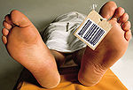

De: La Frikipedia, la enciclopedia extremadamente seria.
De: La Frikipedia, la enciclopedia extremadamente seria. De: La Frikipedia, la enciclopedia extremadamente seria.
|  | Muerto
El autor de este artículo, al parecer, se ha ido a una de sus citas al WC y suponemos que murió como el desdichado de aquí a la izquierda. Así que en su memoria, no seas cabrón, ponle más chorradas al artículo. |
| De la serie Pilotos del Automovilismo mundial: | |||
| Marcos Ambrose | |||
| |||
| Nacionalidad: | Australiano | ||
| Compite en: | NASCAR | ||
| ¿Lo hace ahora mismo? : | Sep | ||
| Se detacó en: | En el V8 Supercars | ||
| Destrozos en su haber: | Uff... | ||
| Nº de muertes que se le atribuyen: | Casi a golpes con otro piloto | ||
| Años en el automovilismo: | 1996 hasta ahora | ||
| Carreras que ha ganado: | Un huevo | ||
| Campeonatos |
3 en el V8 Supercars | ||
Marcos Ambrosio (o como se diga) fue uno de los pilotos más destacados del V8 Supercars australiano, dado que fue el piloto que sacó de la ruina a Ford que por la culpa de Holden no se comía una rosca. Aquí su historia.
..a los diez años de edad con el karting (que ya me tiene hasta los huevos, como podrán imaginar) y en 1996 corrió en la Formula Ford con el equipo fundado por Ralph Firman Sr. (a que les sonó?, si es el padre del paquete ese). En 1998 se fue a Europa, en un intento desesperao por ir a la Fórmula 1. en 1999 gana el campeonato Leropeo de Fórmula Ford.
Cuando Ambrosía terminaba el 2000, se dio cuenta que no tenía un puto duro para continuar su carrera en Europa con lo que se volvió a Australia. Ahí empezaría lo mejor...
En 2001 el equipo "Carreras hermanos de la piedra" (Stone Brothers Racing) le fichó para correr con un Ford. Y quien lo hiba a decir: en su primer carrera consiguió la pole y repetiría en la tercer fecha en el Eastern Creek Raceway debido a un soborno astronómico. Ganó el titulo al novato manazas del año.
En 2002 iba a ser igual de sorprendente. consiguió la primer pole del ano año y ganar su primer carrera de pura potra en el circuito de Sandown (no está mal escrito porque nada que ver tiene con el bronceador).
En 2003 estrenaba su nuevo cacharro comprado en el todo a cien Ford Falcon BA. Entre eso, y la forma de la que le echó huevos, terminó ganando su primer titulo, cosa que repetiría en 2004.
En 2005, su último año en la categoría, fue segundo por un soborno astronómico ser superado por su compañero Rusell Ingall.
Autor(es):